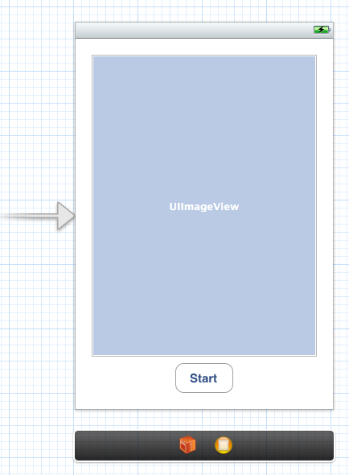

OpenCV iOS - Video Processing¶
This tutorial explains how to process video frames using the iPhone’s camera and OpenCV.
Prerequisites:¶
- Xcode 4.3 or higher
- Basic knowledge of iOS programming (Objective-C, Interface Builder)
Including OpenCV library in your iOS project¶
The OpenCV library comes as a so-called framework, which you can directly drag-and-drop into your XCode project. Download the latest binary from <http://sourceforge.net/projects/opencvlibrary/files/opencv-ios/>. Alternatively follow this guide Installation in iOS to compile the framework manually. Once you have the framework, just drag-and-drop into XCode:

Also you have to locate the prefix header that is used for all header files in the project. The file is typically located at “ProjectName/Supporting Files/ProjectName-Prefix.pch”. There, you have add an include statement to import the opencv library. However, make sure you include opencv before you include UIKit and Foundation, because else you will get some weird compile errors that some macros like min and max are defined multiple times. For example the prefix header could look like the following:
1 2 3 4 5 6 7 8 9 10 11 12 13 14 15 16 17 18 | //
// Prefix header for all source files of the 'VideoFilters' target in the 'VideoFilters' project
//
#import <Availability.h>
#ifndef __IPHONE_4_0
#warning "This project uses features only available in iOS SDK 4.0 and later."
#endif
#ifdef __cplusplus
#import <opencv2/opencv.hpp>
#endif
#ifdef __OBJC__
#import <UIKit/UIKit.h>
#import <Foundation/Foundation.h>
#endif
|
Example video frame processing project¶
User Interface¶
First, we create a simple iOS project, for example Single View Application. Then, we create and add an UIImageView and UIButton to start the camera and display the video frames. The storyboard could look like that:

Make sure to add and connect the IBOutlets and IBActions to the corresponding ViewController:
1 2 3 4 5 6 7 8 9 | @interface ViewController : UIViewController
{
IBOutlet UIImageView* imageView;
IBOutlet UIButton* button;
}
- (IBAction)actionStart:(id)sender;
@end
|
Adding the Camera¶
We add a camera controller to the view controller and initialize it when the view has loaded:
1 2 3 4 5 6 7 8 9 10 11 12 13 | #import <opencv2/highgui/cap_ios.h>
using namespace cv;
@interface ViewController : UIViewController
{
...
CvVideoCamera* videoCamera;
}
...
@property (nonatomic, retain) CvVideoCamera* videoCamera;
@end
|
1 2 3 4 5 6 7 8 9 10 11 12 | - (void)viewDidLoad
{
[super viewDidLoad];
// Do any additional setup after loading the view, typically from a nib.
self.videoCamera = [[CvVideoCamera alloc] initWithParentView:imageView];
self.videoCamera.defaultAVCaptureDevicePosition = AVCaptureDevicePositionFront;
self.videoCamera.defaultAVCaptureSessionPreset = AVCaptureSessionPreset352x288;
self.videoCamera.defaultAVCaptureVideoOrientation = AVCaptureVideoOrientationPortrait;
self.videoCamera.defaultFPS = 30;
self.videoCamera.grayscale = NO;
}
|
In this case, we initialize the camera and provide the imageView as a target for rendering each frame. CvVideoCamera is basically a wrapper around AVFoundation, so we provie as properties some of the AVFoundation camera options. For example we want to use the front camera, set the video size to 352x288 and a video orientation (the video camera normally outputs in landscape mode, which results in transposed data when you design a portrait application).
The property defaultFPS sets the FPS of the camera. If the processing is less fast than the desired FPS, frames are automatically dropped.
The property grayscale=YES results in a different colorspace, namely “YUV (YpCbCr 4:2:0)”, while grayscale=NO will output 32 bit BGRA.
Additionally, we have to manually add framework dependencies of the opencv framework. Finally, you should have at least the following frameworks in your project:
opencv2
Accelerate
AssetsLibrary
AVFoundation
CoreGraphics
CoreImage
CoreMedia
CoreVideo
QuartzCore
UIKit
Foundation

Processing frames¶
We follow the delegation pattern, which is very common in iOS, to provide access to each camera frame. Basically, the View Controller has to implement the CvVideoCameraDelegate protocol and has to be set as delegate to the video camera:
1 | @interface ViewController : UIViewController<CvVideoCameraDelegate>
|
1 2 3 4 5 6 7 | - (void)viewDidLoad
{
...
self.videoCamera = [[CvVideoCamera alloc] initWithParentView:imageView];
self.videoCamera.delegate = self;
...
}
|
1 2 3 4 5 6 7 8 | #pragma mark - Protocol CvVideoCameraDelegate
#ifdef __cplusplus
- (void)processImage:(Mat&)image;
{
// Do some OpenCV stuff with the image
}
#endif
|
Note that we are using C++ here (cv::Mat). Important: You have to rename the view controller’s extension .m into .mm, so that the compiler compiles it under the assumption of Objective-C++ (Objective-C and C++ mixed). Then, __cplusplus is defined when the compiler is processing the file for C++ code. Therefore, we put our code within a block where __cplusplus is defined.
Basic video processing¶
From here you can start processing video frames. For example the following snippet color-inverts the image:
1 2 3 4 5 6 7 8 9 10 | - (void)processImage:(Mat&)image;
{
// Do some OpenCV stuff with the image
Mat image_copy;
cvtColor(image, image_copy, CV_BGRA2BGR);
// invert image
bitwise_not(image_copy, image_copy);
cvtColor(image_copy, image, CV_BGR2BGRA);
}
|
Start!¶
Finally, we have to tell the camera to actually start/stop working. The following code will start the camera when you press the button, assuming you connected the UI properly:
1 2 3 4 5 6 | #pragma mark - UI Actions
- (IBAction)actionStart:(id)sender;
{
[self.videoCamera start];
}
|
Hints¶
Try to avoid costly matrix copy operations as much as you can, especially if you are aiming for real-time. As the image data is passed as reference, work in-place, if possible.
When you are working on grayscale data, turn set grayscale = YES as the YUV colorspace gives you directly access the luminance plane.
The Accelerate framework provides some CPU-accelerated DSP filters, which come handy in your case.
Help and Feedback
You did not find what you were looking for?- Ask a question on the Q&A forum.
- If you think something is missing or wrong in the documentation, please file a bug report.